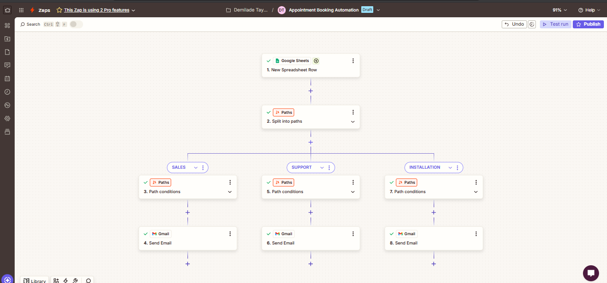

PROJECT 01 / AUTOMATION CASE STUDY
A department-based appointment management workflow designed to organise customer booking requests, manage appointment information and automate departmental email notifications.
The goal of this project was to design an automated appointment management system that reduces manual handling of customer requests and improves how appointments are distributed across departments.
The workflow uses Google Sheets as its central appointment database and Zapier to process new appointment records and manage notification routing.

Actual Zapier workflow structure showing Google Sheets, department routing and Gmail notification actions.
The planned workflow follows this structure:
The spreadsheet was designed with these fields:
Individual Gmail notification actions were tested successfully. A test notification was received.
During deployment, Zapier requested a plan upgrade for the multi-step workflow and department routing configuration. This prevented full publication of the intended automation.
The complete end-to-end routing process therefore remains pending deployment and validation.
The automation uses Paths by Zapier to direct each appointment to the appropriate department based on the Department field submitted through Google Sheets.
Sales: Department exactly matches Sales
Support: Department exactly matches Support
Installation: Department exactly matches Installation
Each path contains a Gmail action configured to send a notification to the corresponding department.